The “Frame and Origin” tab in Prism allows you to change the appearance of the graph’s axes. Some of these options have been implemented in ggprism as axis guides. This vignette will go through how to use the 4 axis guides included in this package.
Minor ticks
Adding minor ticks to graphs is very simple. There are two mains ways, using the continuous scale functions such as scale_x_continuous() or using the guides() function, both from ggplot2. Note that guide_prism_minor() does not work with discrete axes as they do not have minor breaks.
# Compare methods for adding minor ticks
p <- ggplot(ToothGrowth, aes(x = factor(supp), y = len)) +
geom_boxplot(aes(fill = factor(supp))) +
theme_prism() +
theme(legend.position = "none")
p1 <- p + scale_y_continuous(guide = guide_prism_minor())
p2 <- p + guides(y = guide_prism_minor())
p1 + p2
Note that if you are happy with the defaults you can refer to the axis guide as a string instead of calling the function.
# refer to guide as string
p <- ggplot(ToothGrowth, aes(x = factor(supp), y = len)) +
geom_boxplot(aes(fill = factor(supp))) +
theme_prism() +
theme(legend.position = "none")
p1 <- p + scale_y_continuous(guide = "prism_minor")
p2 <- p + guides(y = "prism_minor")
p1 + p2To adjust the number of minor ticks, you just change the number of minor breaks using the minor_breaks argument of the continuous scale functions. The vector you give the minor_breaks argument will define the position of each minor tick.
# compare 1 minor ticks (default) vs 4 minor ticks per major tick
p <- ggplot(ToothGrowth, aes(x = factor(dose), y = len)) +
stat_summary(aes(fill = factor(dose)), na.rm = TRUE,
geom = "col", fun = mean, colour = "black", size = 0.9) +
theme_prism() +
theme(legend.position = "none")
p1 <- p + scale_y_continuous(guide = "prism_minor",
limits = c(0, 30),
expand = c(0, 0))
p2 <- p + scale_y_continuous(guide = "prism_minor",
limits = c(0, 30),
expand = c(0, 0),
minor_breaks = seq(0, 30, 2))
p1 + p2To get log10 minor ticks, just use a log10 scale and then modify the n minor_breaks argument as above. Remember the vector you give the minor_breaks argument will define the position of each minor tick.
p <- ggplot(msleep, aes(bodywt, brainwt)) +
geom_point(na.rm = TRUE) +
theme_prism()
p1 <- p + scale_x_log10(limits = c(1e0, 1e4),
guide = "prism_minor")
p2 <- p + scale_x_log10(limits = c(1e0, 1e4),
minor_breaks = rep(1:9, 4)*(10^rep(0:3, each = 9)),
guide = "prism_minor")
p1 + p2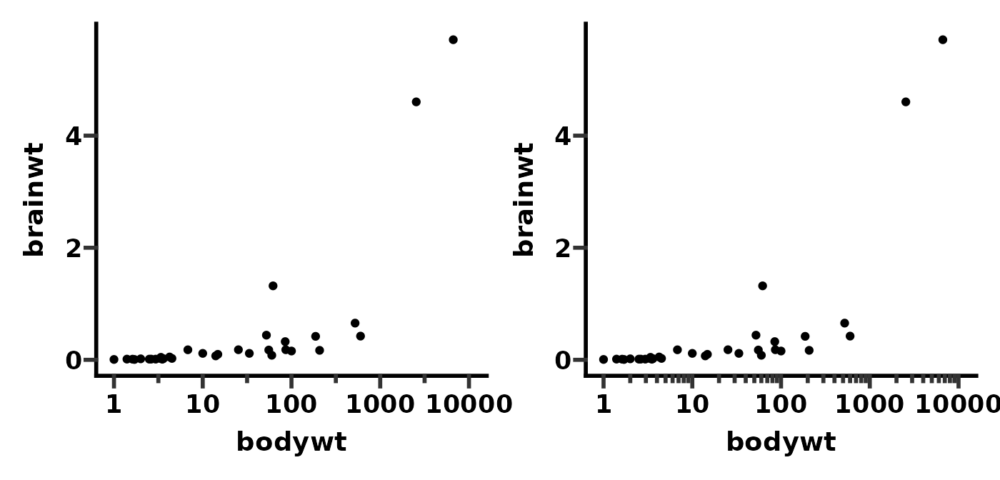
You can use the theme() function with the prism.ticks.length argument to change the length of the minor ticks. This works in the same way as the axis.ticks.length argument to change the length of major ticks.
# change minor tick length
p <- ggplot(ToothGrowth, aes(x = factor(dose), y = len)) +
stat_summary(aes(fill = factor(dose)), na.rm = TRUE,
geom = "col", fun = mean, colour = "black", size = 0.9) +
theme_prism() +
scale_y_continuous(guide = "prism_minor",
limits = c(0, 30),
expand = c(0, 0),
minor_breaks = seq(0, 30, 2))
p1 <- p + theme(legend.position = "none")
p2 <- p + theme(legend.position = "none",
prism.ticks.length.y = unit(20, "pt"))
p1 + p2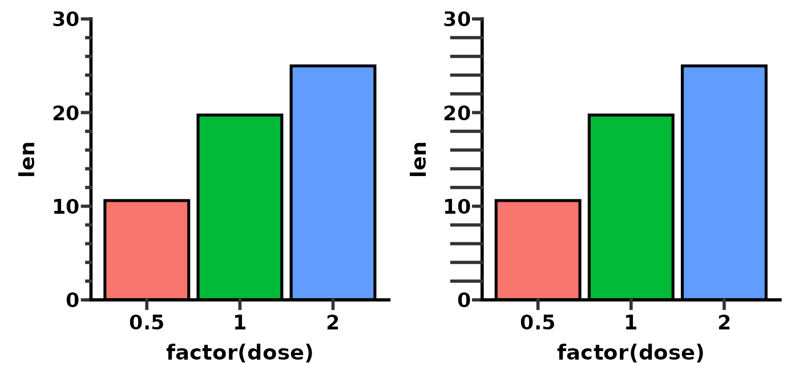
You can change the direction of minor ticks just by making their length negative.
# change minor tick length
p <- ggplot(ToothGrowth, aes(x = factor(dose), y = len)) +
stat_summary(aes(fill = factor(dose)), na.rm = TRUE,
geom = "col", fun = mean, colour = "black", size = 0.9) +
theme_prism() +
scale_y_continuous(guide = "prism_minor",
limits = c(0, 30),
expand = c(0, 0),
minor_breaks = seq(0, 30, 2))
p1 <- p + theme(legend.position = "none",
prism.ticks.length.y = unit(20, "pt"))
p2 <- p + theme(legend.position = "none",
prism.ticks.length.y = unit(-20, "pt"))
p1 + p2The colour (and other aesthetic attributes) of minor ticks will change when you change the colour of major ticks using the axis.ticks argument of the theme() function.
# change how ticks look
p <- ggplot(ToothGrowth, aes(x = factor(dose), y = len)) +
stat_summary(aes(fill = factor(dose)), na.rm = TRUE,
geom = "col", fun = mean, colour = "black", size = 0.9) +
theme_prism() +
scale_y_continuous(guide = "prism_minor",
limits = c(0, 30),
expand = c(0, 0),
minor_breaks = seq(0, 30, 2))
p1 <- p + theme(legend.position = "none")
p2 <- p + theme(legend.position = "none",
axis.ticks.y = element_line(colour = "blue",
size = 2,
lineend = "round"))
p1 + p2Offset axis
One popular axis option in Prism is the offset axis. This has been implemented in ggprism as the guide_prism_offset() function. This function works by only drawing the axis line to the outer most tick mark (either major or minor tick). Technically, it works with both continuous and discrete scales, but it should probably only be used with continuous scales.
If you want an offset axis with minor ticks, see the guide_prism_offset_minor() function below.
# show that offset axis looks better when you specify the axis limits
p <- ggplot(ToothGrowth, aes(x = factor(supp), y = len)) +
geom_boxplot(aes(fill = factor(supp))) +
theme_prism() +
theme(legend.position = "none")
p1 <- p + scale_y_continuous(guide = "prism_offset")
p2 <- p + scale_y_continuous(limits = c(0, 40), guide = "prism_offset")
p1 + p2As with a normal ggplot, you can adjust the appearance of the offset axis line with the theme() function and the axis.line argument.
# change appearance of offset axis
p <- ggplot(ToothGrowth, aes(x = factor(supp), y = len)) +
geom_boxplot(aes(fill = factor(supp))) +
theme_prism() +
scale_y_continuous(limits = c(0, 40), guide = "prism_offset")
p1 <- p + theme(legend.position = "none")
p2 <- p + theme(legend.position = "none",
axis.line.y = element_line(colour = "blue",
size = 2,
lineend = "round"))
p1 + p2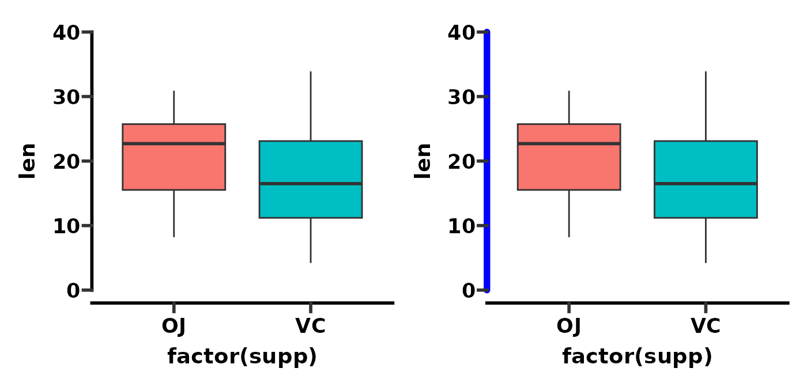
Offset axis with minor ticks
The guide_prism_offset_minor() function is similar to guide_prism_minor() except the axis line is offset.
# compare prism_minor with prism_offset_minor
p <- ggplot(ToothGrowth, aes(x = factor(supp), y = len)) +
geom_boxplot(aes(fill = factor(supp))) +
theme_prism() +
theme(legend.position = "none")
p1 <- p + scale_y_continuous(guide = "prism_offset")
p2 <- p + scale_y_continuous(guide = "prism_offset_minor")
p1 + p2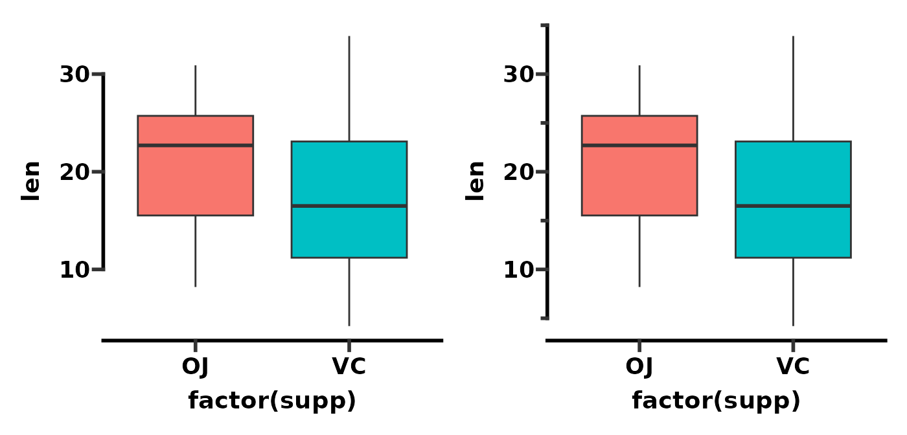
As with guide_prism_offset(), the axis tends to look better if you explicitly set the axis limits.
p <- ggplot(ToothGrowth, aes(x = factor(supp), y = len)) +
geom_boxplot(aes(fill = factor(supp))) +
theme_prism() +
theme(legend.position = "none")
p1 <- p + scale_y_continuous(guide = "prism_offset_minor")
p2 <- p + scale_y_continuous(limits = c(0, 40),
guide = "prism_offset_minor")
p1 + p2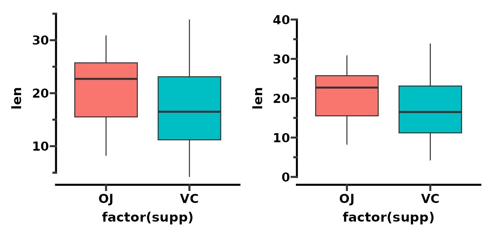
As with guide_prism_minor() you can change the number of minor ticks by adjusting the minor_breaks.
# compare 1 minor tick to 4 minor ticks per major
p <- ggplot(ToothGrowth, aes(x = factor(supp), y = len)) +
geom_boxplot(aes(fill = factor(supp))) +
theme_prism() +
theme(legend.position = "none")
p1 <- p + scale_y_continuous(limits = c(0, 40),
guide = "prism_offset_minor")
p2 <- p + scale_y_continuous(limits = c(0, 40),
minor_breaks = seq(0, 40, 2),
guide = "prism_offset_minor")
p1 + p2And as with guide_prism_minor() you can change the length of minor ticks by adjusting the prism_ticks_length argument of the theme() function.
# change minor tick length and direction
p <- ggplot(ToothGrowth, aes(x = factor(supp), y = len)) +
geom_boxplot(aes(fill = factor(supp))) +
theme_prism() +
scale_y_continuous(limits = c(0, 40),
minor_breaks = seq(0, 40, 2),
guide = "prism_offset_minor")
p1 <- p + theme(legend.position = "none",
prism.ticks.length.y = unit(20, "pt"))
p2 <- p + theme(legend.position = "none",
prism.ticks.length.y = unit(-20, "pt"))
p1 + p2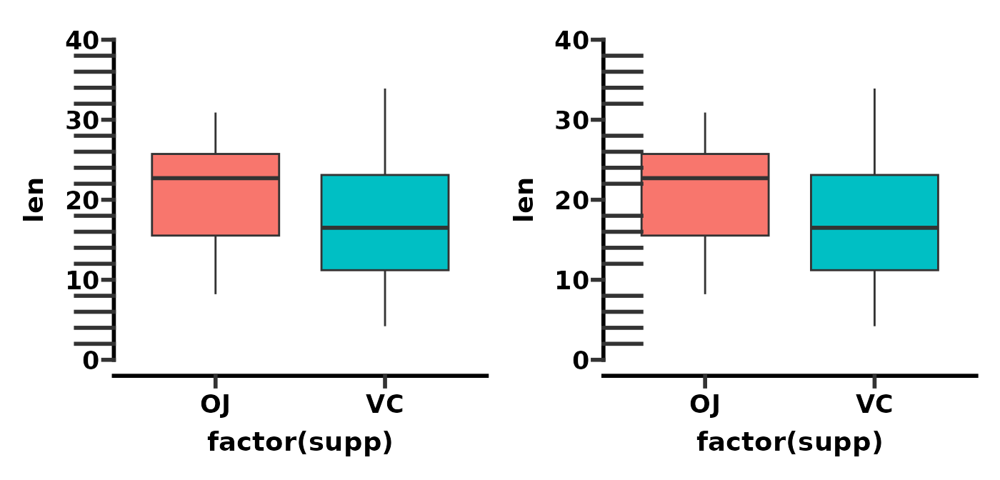
Lastly, the colour (and other aesthetic attributes) of minor ticks will change when you change the colour of major ticks using the axis.ticks argument of the theme() function.
# change minor tick colour, thickness, and lineend
p <- ggplot(ToothGrowth, aes(x = factor(supp), y = len)) +
geom_boxplot(aes(fill = factor(supp))) +
theme_prism() +
scale_y_continuous(limits = c(0, 40),
minor_breaks = seq(0, 40, 2),
guide = "prism_offset_minor")
p1 <- p + theme(legend.position = "none",
prism.ticks.length.y = unit(20, "pt"))
p2 <- p + theme(legend.position = "none",
prism.ticks.length.y = unit(20, "pt"),
axis.ticks.y = element_line(colour = "blue",
size = 2,
lineend = "round"))
p1 + p2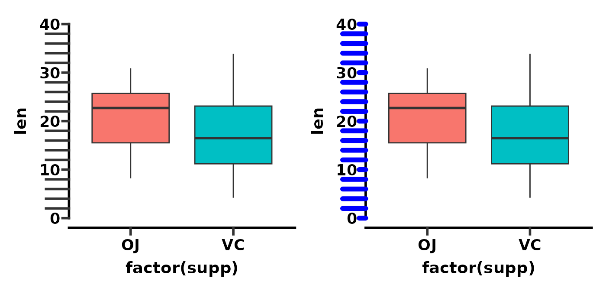
Brackets axis
Brackets are not an axis option in GraphPad Prism. Rather the idea comes from the lemon package functions brackets_horisontal() and brackets_vertical(). I wanted brackets for my graphs, therefore they have been re-implemented in ggprism as the guide_prism_brackets() axis guide.
This axis guide works best with discrete axes.
# show bracket axis guide
p1 <- ggplot(ToothGrowth, aes(x = factor(dose), y = len)) +
geom_jitter(aes(shape = factor(dose)), width = 0.2, size = 2) +
scale_shape_prism() +
theme_prism() +
theme(legend.position = "none") +
scale_y_continuous(limits = c(0, 40), guide = "prism_offset")
p2 <- p1 + scale_x_discrete(guide = "prism_bracket")
p1 + p2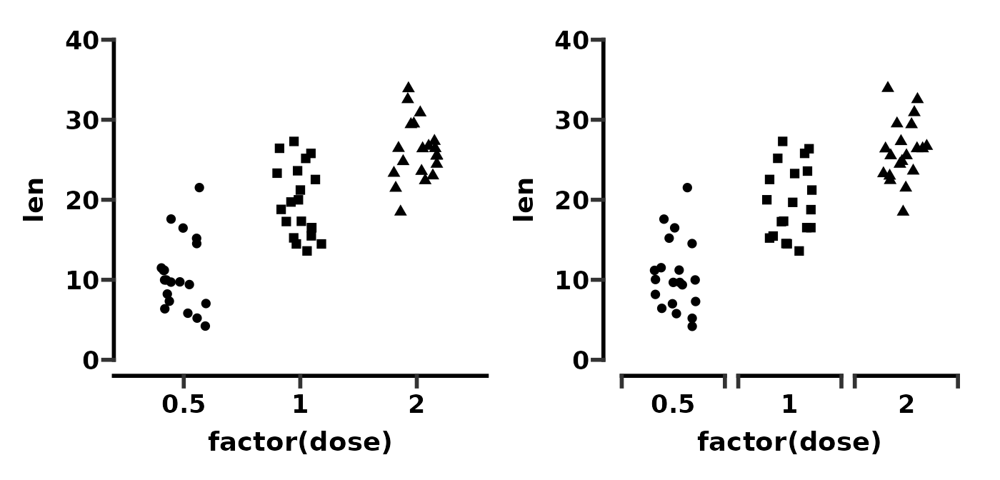
The guide works fine with flipped plots.
# show bracket axis guide with flipped plot
p1 <- ggplot(ToothGrowth, aes(x = factor(dose), y = len)) +
geom_jitter(aes(shape = factor(dose)), width = 0.2, size = 2) +
scale_shape_prism() +
theme_prism() +
theme(legend.position = "none") +
scale_y_continuous(limits = c(0, 40), guide = "prism_offset") +
scale_x_discrete(guide = "prism_bracket")
p2 <- p1 + coord_flip()
p1 + p2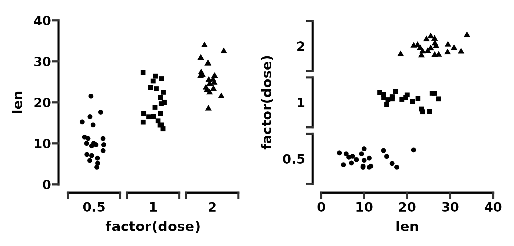
By default, the function tries to guess how wide the brackets should be. However you can control the bracket width with the width argument. Try numbers between 0 and 1. In this example we make the width of geom_jitter() and the width of guide_prism_bracket() both 0.2 which seems to work well.
# control bracket width
p <- ggplot(ToothGrowth, aes(x = factor(dose), y = len)) +
geom_jitter(aes(shape = factor(dose)), width = 0.2, size = 2) +
scale_shape_prism() +
theme_prism() +
theme(legend.position = "none") +
scale_y_continuous(limits = c(0, 40), guide = "prism_offset")
p1 <- p + scale_x_discrete(guide = "prism_bracket")
p2 <- p + scale_x_discrete(guide = guide_prism_bracket(width = 0.2))
p1 + p2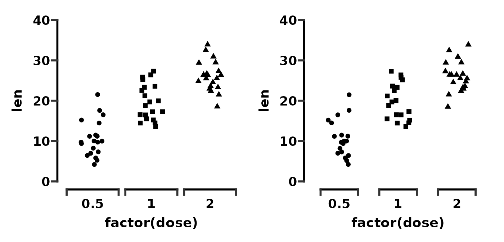
You can change the bracket direction with the outside argument. By default, outside = TRUE which means the brackets point outward.
# compare brackets outside or inside
p <- ggplot(ToothGrowth, aes(x = factor(dose), y = len)) +
geom_jitter(aes(shape = factor(dose)), width = 0.2, size = 2) +
scale_shape_prism() +
theme_prism() +
theme(legend.position = "none") +
scale_y_continuous(limits = c(0, 40), guide = "prism_offset")
p1 <- p + scale_x_discrete(guide = "prism_bracket")
p2 <- p + scale_x_discrete(guide = guide_prism_bracket(outside = FALSE))
p1 + p2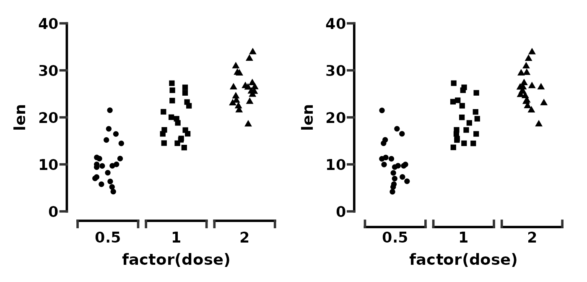
Making the brackets point inside makes the space between the axis text and the brackets smaller. You can increase this distance again by changing the margin of the relevent axis.text element.
# adjust text spacing with inside pointing brackets
p <- ggplot(ToothGrowth, aes(x = factor(dose), y = len)) +
geom_jitter(aes(shape = factor(dose)), width = 0.2, size = 2) +
scale_shape_prism() +
theme_prism() +
scale_y_continuous(limits = c(0, 40), guide = "prism_offset") +
scale_x_discrete(guide = guide_prism_bracket(outside = FALSE))
p1 <- p + theme(legend.position = "none")
p2 <- p + theme(legend.position = "none",
axis.text.x = element_text(margin = margin(t = 10)))
p1 + p2Border with minor ticks
Say you want a graph, with a border, and with minor ticks. There are a couple of ways one might do this, one of which is outlined here. The other way involved messing around with secondary axes and is buggy so we’ll ignore it for now.
First we define a base plot.
# define a base plot
base <- ggplot(mpg, aes(x = displ, y = cty)) +
geom_point(aes(colour = class))
base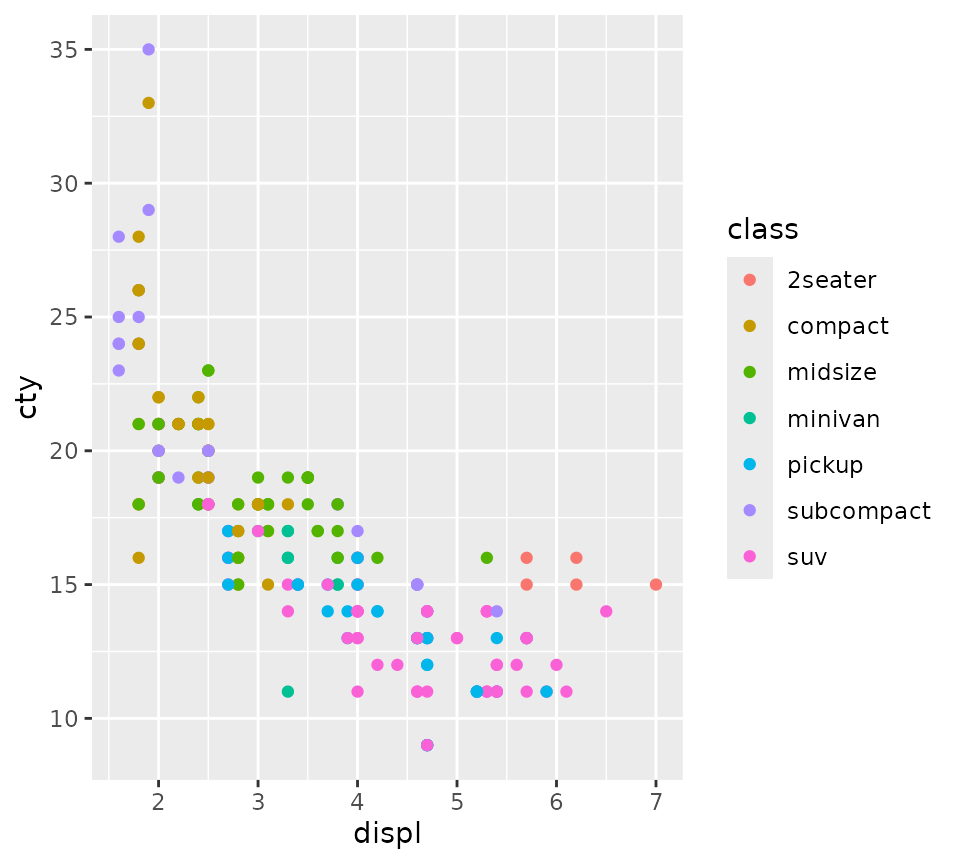
Then we’ll apply theme_prism() with a border, move the legend into the plotting area, and turn clipping off so the border thickness is accurate.
# apply theme_prism and turn clipping off for the border
p <- base + theme_prism(border = TRUE) +
theme(legend.position = c(0.8, 0.75)) +
coord_cartesian(clip = "off")
pNow we’ll add minor ticks to both primary axes.
# add axis guides
p <- p + guides(x = "prism_minor", y = "prism_minor")
pOne way to add minor ticks all around the border is to use the annotation_ticks() function in ggprism. This is the way I would recommend to avoid the issues that arise using secondary axes.
Here we add ticks as a plot annotation (i.e. not a proper axis) with the following arguments:
- Put the ticks on the top and right sides
- Draw both major and minor ticks (as opposed to just
"minor"or"major") - Make the thickness = 1
- Make them point outside (must turn clipping off!)
- Try to match the lengths with the other tick marks (bit of trial and error)
# add tick annotations
p_annot <- p + annotation_ticks(sides = "tr", type = "both", size = 1,
outside = TRUE,
tick.length = unit(14/2, "pt"),
minor.length = unit(14/4, "pt"))
p_annot
You can adjust the number of minor ticks using the continuous scale functions as before.
# tick annotations will mirror adjustments to the actual axis ticks
p_annot <- p_annot + scale_x_continuous(minor_breaks = seq(1, 7, 0.2))
p_annot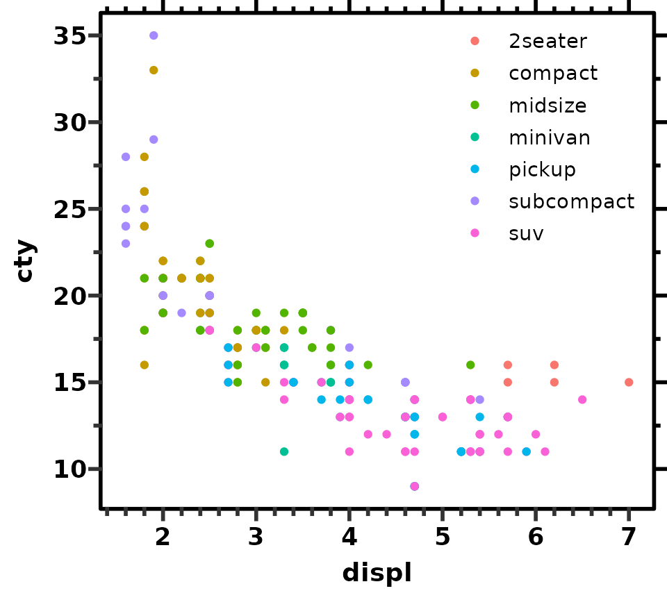
Discontinuous axis
Generally using discontinuous axes is discouraged. However as it is an option in GraphPad Prism, an example of how to do this with ggprism is given below.
First we’ll take the ToothGrowth data set and change a value in the len column to be an obvious outlier.
# multiply one of the len values by 100
tg <- ToothGrowth
tg[2, "len"] <- tg[2, "len"] * 100Next we’ll see what a plot without a discontinuous axis would look like. The majority of the data has been compressed near the bottom of the plot in an attempt to fit the outlier point. In this situation one might want to use a discontinuous axis (although honestly it is probably better to add an inset plot using the patchwork package).
ggplot(tg, aes(x = factor(dose), y = len)) +
geom_jitter(aes(shape = factor(dose)), width = 0.2, size = 2) +
scale_shape_prism() +
theme_prism() +
theme(legend.position = "none")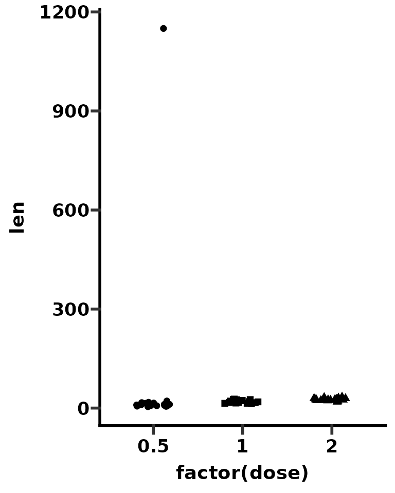
We’ll use the patchwork package to create our discontinuous axis plot. Indeed, we will be making two plots (one zoomed in on the main data and the other zoomed in on the outlier), using a slightly different theme for each plot, and then combining them.
First we’ll make a plot zoomed in on the main data. It is important to use coord_cartesian() to change the axis limits instead of scale_y_continuous() as coord_cartesian() does not exclude any data, unlike scale_y_continuous().
p_bottom <- ggplot(tg, aes(x = factor(dose), y = len)) +
geom_jitter(aes(shape = factor(dose)), width = 0.2, size = 2) +
scale_shape_prism() +
coord_cartesian(ylim = c(0, 60)) +
guides(x = "prism_bracket", y = "prism_offset_minor") +
theme_prism() +
theme(legend.position = "none")
p_bottom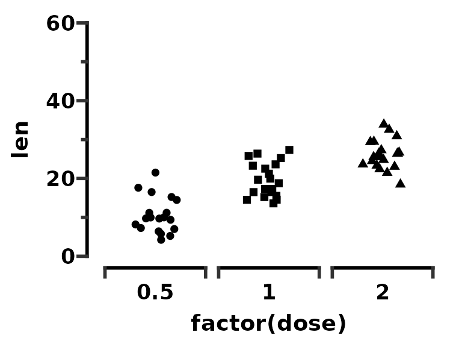
Next we’ll make a plot zoomed in on the outlier, and we’ll make a new theme for the top plot specifically, called theme_outlier().
p_top <- ggplot(tg, aes(x = factor(dose), y = len)) +
geom_jitter(aes(shape = factor(dose)), width = 0.2, size = 2) +
scale_shape_prism() +
coord_cartesian(ylim = c(1140, 1160)) +
scale_y_continuous(breaks = c(1140, 1160)) +
guides(y = "prism_offset_minor")
theme_outlier <- function(palette = "black_and_white",
base_size = 14,
base_family = "sans",
base_fontface = "bold",
base_line_size = base_size/14,
base_rect_size = base_size/14,
axis_text_angle = 0,
border = FALSE) {
theme_prism(palette = palette,
base_size = base_size,
base_family = base_family,
base_fontface = base_fontface,
base_line_size = base_line_size,
base_rect_size = base_rect_size,
axis_text_angle = axis_text_angle,
border = border) %+replace%
theme(axis.title = element_blank(),
axis.text.x = element_blank(),
axis.ticks.x = element_blank(),
axis.line.x = element_blank(),
legend.position = "none")
}
p_top <- p_top + theme_outlier()
p_top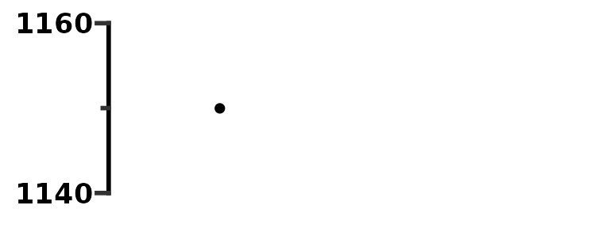
Now we’ll combine the two plots with patchwork. We can easily change theme elements of both plots using & theme().
p_top / p_bottom +
plot_layout(heights = c(1, 4)) &
theme(axis.text.y = element_text(colour = "red"))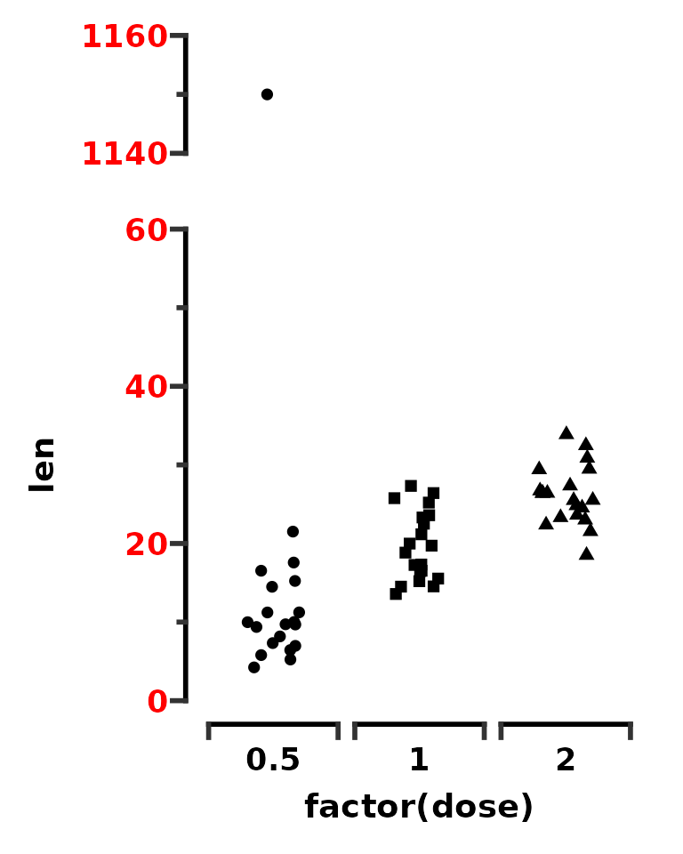